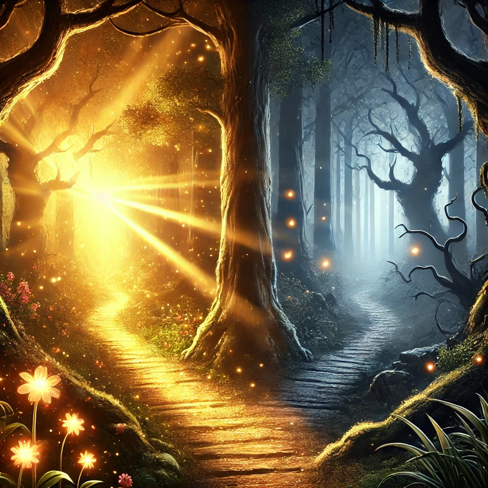

A Jornada do Artefato
Era uma manhã como qualquer outra na vila de Eldoria, mas algo dentro de você dizia que aquele dia seria diferente. Durante sua caminhada pela Floresta Encantada, você é atraído por um brilho dourado entre as folhas. Uma pedra esférica, pulsando como um coração vivo, repousa sobre um pedestal coberto de musgo. Quando você tocou a pedra, uma energia percorreu seu corpo, e uma raposa dourada emergiu das sombras. ‘Você foi escolhido, viajante,’ disse ela. ‘Este artefato carrega o destino do nosso mundo. O equilíbrio entre luz e trevas está rompido, e apenas você pode restaurá-lo.’ Dois caminhos surgiram à sua frente.
